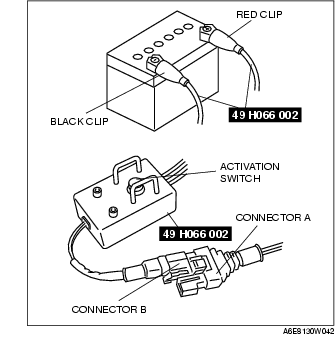

Inspection of SST (deployment tool)
• Use the SST (Deployment tool) to deploy a live (undeployed) air bag module or pre-tensioner seat belt before disposing of it.
• Before using the SST (Deployment tool), inspect its operation.

Inspection Procedure
1. Follow the steps below to verify that the SST (Deployment tool) is operating correctly.

- • If there is any malfunction, do not use the SST (Deployment tool) because it may cause the air bag module or pre-tensioner seat belt to unexpectedly deploy upon connection to the air bag module or pre-tensioner seat belt.